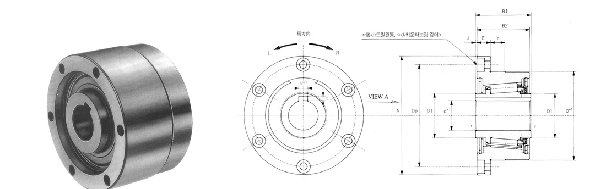
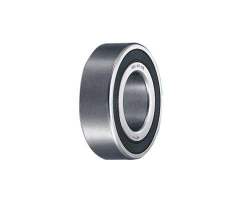
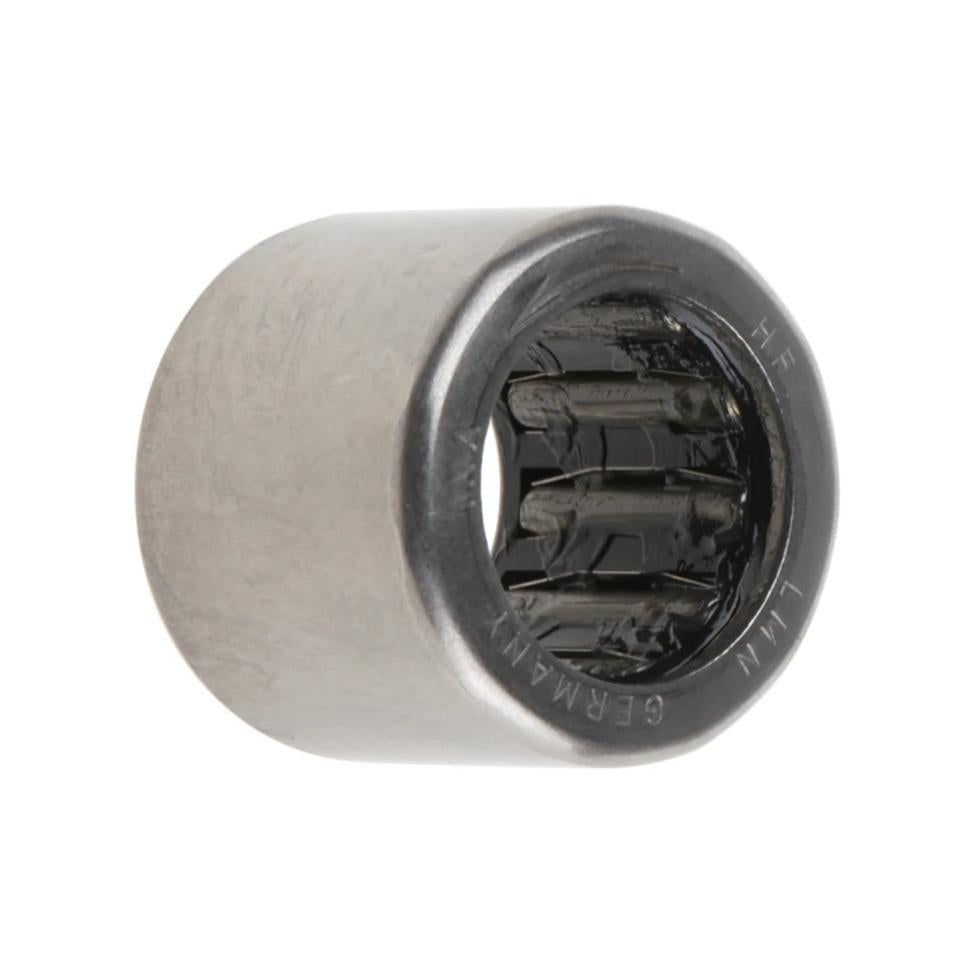

Clutch Bearings
한쪽 방향으로만 회전을 전달하고 반대 방향으로는 공회전(프리휠) 또는 잠김 기능을 하는 클러치 베어링입니다.
TSS/TFS(스프래그형), FC/RC/RCB(캠형), BW/BWC(니들 클러치) 등 다양한 계열로 공급됩니다.
형번 또는 치수 일부만 입력해도 검색됩니다.
당사 SWS 카탈로그 규격 도면

d(내경) · D(외경) · B(폭) · 하우징 일체형(플랜지 고정형) 구조 — TSS·TFS·BB·LD 공통 형태입니다. B 계열(인서트형)과 FC 외 8종(드로운컵형)은 각 탭에서 별도 개념도를 확인할 수 있습니다.
좌: 실물 사진(베어링형 스프래그 클러치 예시) · 우: 형태 참고용 개념도 (SWS 카탈로그 실측 도면 아님)

d(내경) · D(외경) · 하우징 없이 내·외륜(스프래그 인서트)만 공급하며, 표준 베어링 보어에 압입해 사용합니다. 실물 사진은 해외 유통사의 동종 타사(TSUBAKI BB시리즈) 예시로, 외관은 일반 볼베어링과 거의 동일합니다. TSUBAKI BB시리즈는 키홈 가공(“-2K”) 보어 옵션도 있으며, 당사 B 시리즈의 사이즈별 키홈 가공 가능 여부는 견적 문의로 확인해 드립니다. 당사 제품의 형번별 치수는 아래 표를 참고하세요.
| 형번 | d(내경) | D(외경) | B(폭) |
|---|---|---|---|
| B203 | 16.51 | 40 | 25 |
| B204 | 18.796 | 47 | 25 |
| B205 | 23.622 | 52 | 25 |
| B206 | 32.766 | 62 | 28 |
| B207 | 42.088 | 72 | 28 |
| B208 | 46.761 | 80 | 32 |
| B209 | 46.761 | 85 | 32 |
| B210 | 56.109 | 90 | 32 |
좌: 실물 사진(HF 시리즈 예시) · 우: 형태 참고용 개념도 (SWS 카탈로그 실측 도면 아님)

d(내경) · D(외경) · B(폭) · 얇은 드로운컵(타발) 외륜에 니들 롤러를 넣은 소형 구조 — FC·HF·RC·RCB·FCB·FCBN이 이 구조입니다. (X·BWC·BW는 드로운컵 외륜이 없는 다른 구조로, 각 시리즈 페이지에 별도 사진·설명을 실었습니다.) 실물 사진은 해외 유통사 판매 페이지의 HF 시리즈 예시이며, 형번별 치수는 아래 카드에서 각 시리즈 페이지로 이동해 확인할 수 있습니다.
드로운컵 클러치 전용(IKO/NTN 계열)
메트릭 · 12건 · 규격 보기 →드로운컵 클러치 전용(INA/IKO 계열)
메트릭 · 12건 · 규격 보기 →드로운컵, Torrington/Koyo 계열
인치 · 6건 · 규격 보기 →RC 대비 광폭, 양쪽 개방형
인치 · 5건 · 규격 보기 →FCB를 초소형(4~6mm)으로 축소
메트릭 · 2건 · 규격 보기 →클러치+베어링 일체형, FC보다 광폭
메트릭 · 7건 · 규격 보기 →케이지형(외륜 없음), 대형
인치 · 6건 · 규격 보기 →케이지형(외륜 없음), X·BW와 동일 구조
인치 · 6건 · 규격 보기 →케이지형(외륜 없음), X·BWC와 동일 구조
인치 · 8건 · 규격 보기 →
※ 위 표는 당사 SWS 카탈로그(베어링 치수표)를 기준으로 작성했습니다. 정밀 가공·발주 전에는 반드시 당사 정식 규격표 원본으로 최종 확인하시기 바랍니다.
이 제품군은 ISO 492 일반 허용공차 규격이 적용되지 않는(또는 별도 정밀등급이 적용되는) 품목으로, 공차는 제조사 자체 규격을 따릅니다. 정확한 공차는 발주 전 문의 바랍니다.